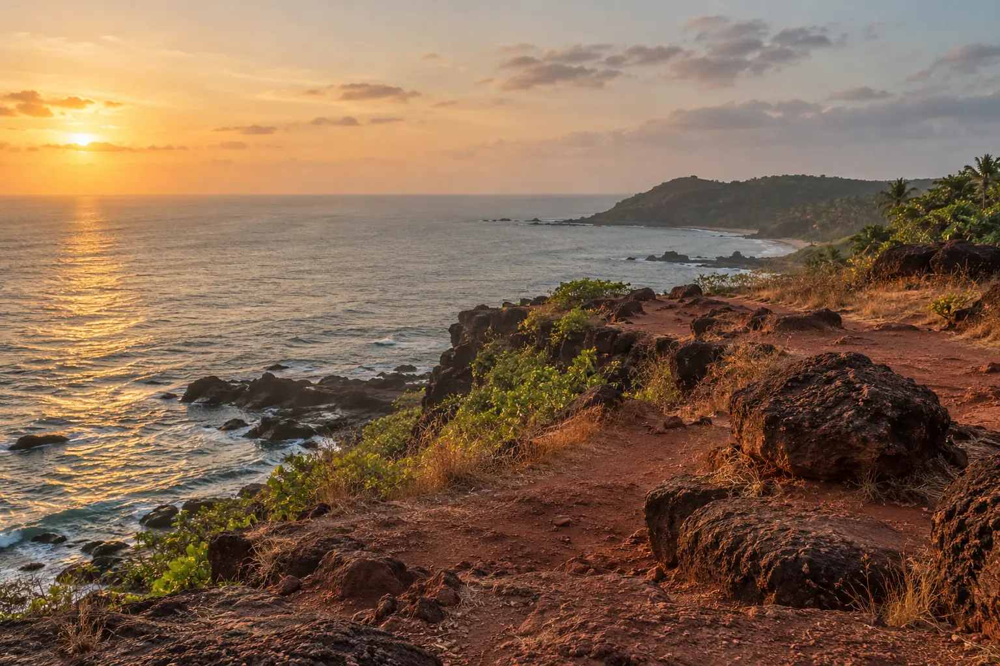
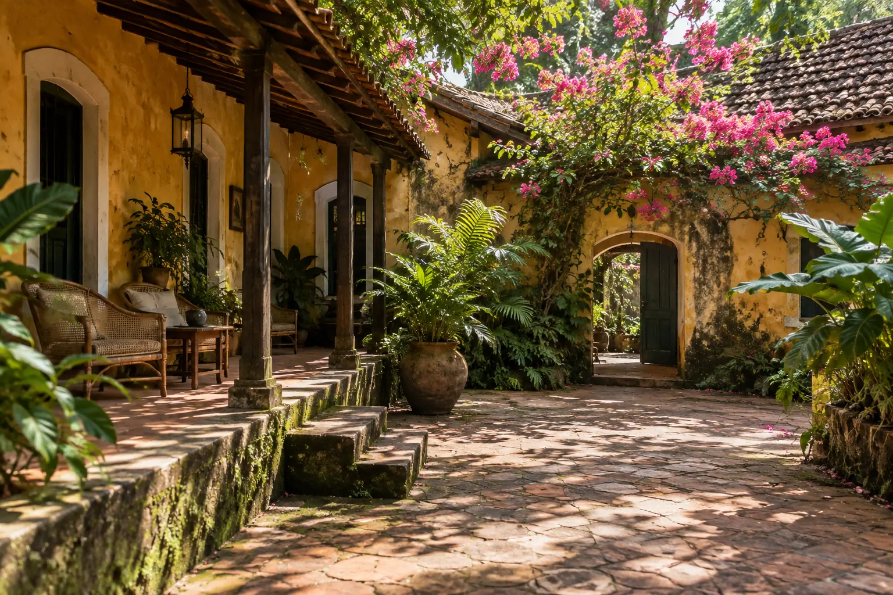
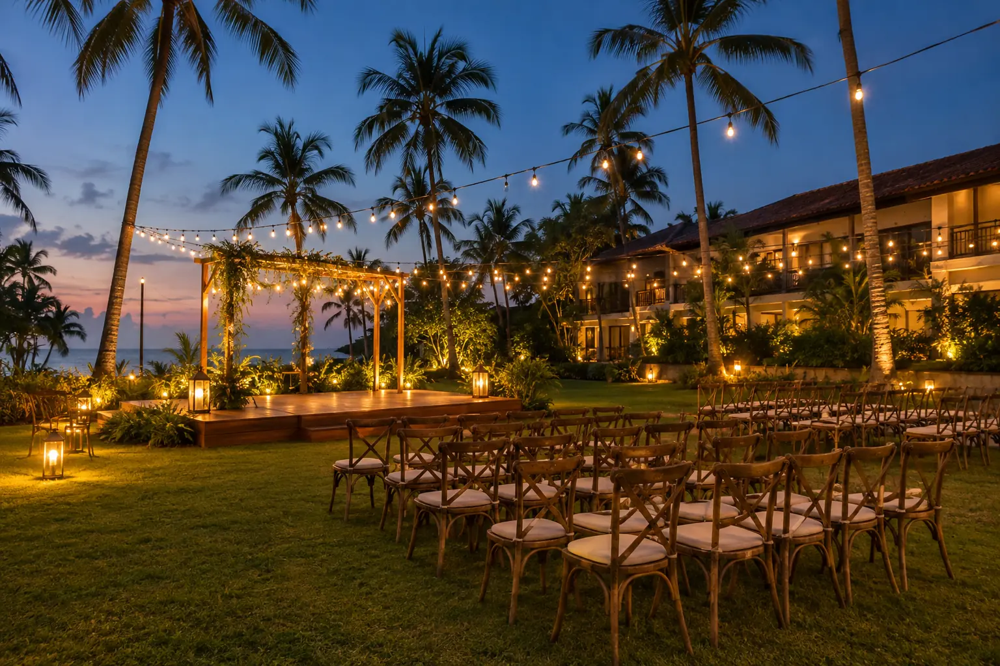

Morjim, Ashwem & Mandrem
Wide, quiet sand and our home stretch. Beach weddings with room for 200 and no crowd in frame, and sunset pheras with a clean horizon.
Best for: beach weddings, sunset pherasOur studio is in Morjim, so North Goa is where we shoot most weddings, pre-weddings and couple sessions. We know which beach stays quiet in December and how long the drive to Assagao takes at five in the evening.
North Goa packs very different settings into a short drive: wide sand at Morjim and Ashwem, red laterite cliffs at Vagator and Chapora, Portuguese-era villas in Assagao and Siolim, and big resort lawns at Candolim. That makes it easy to plan a wedding weekend or a two-look pre-wedding without losing the light on the road.
Wide, quiet sand and our home stretch. Beach weddings with room for 200 and no crowd in frame, and sunset pheras with a clean horizon.
Best for: beach weddings, sunset pheras
Red cliffs above the sea and the old fort walls. The view people remember for proposals and pre-wedding portraits at cliff-top golden hour.
Best for: pre-weddings, proposals
Portuguese-era homes with verandas and courtyards, shaded all day. Made for mehendi, haldi and intimate weddings of 40 to 120 guests.
Best for: villa weddings, mehendi, haldi
Large lawns, ballrooms and pools for receptions and sangeets, with beach access for sunset portraits between functions.
Best for: resort weddings, receptionsEvery function across the weekend, in photographs and film, from haldi by the pool to a beach reception.
Explore →Two or three nearby locations planned around the last hour of light, with outfits and a route on one page.
Explore →Sunset walks, honeymoons and proposals at a spot near where you are staying.
Explore →Our studio is in Morjim and travel anywhere in Goa is included in every quote.
Our studio and team are in Morjim, on the North Goa coast. That is why most of our weddings and shoots happen between Mandrem and Candolim.
No. Travel and stay anywhere in Goa are included in every quote, North or South.
For a beach wedding with space and no crowd in frame, Morjim and Ashwem. For dramatic portraits, the cliffs at Vagator and Chapora. Tell us your guest count and we suggest options with your venue.
Yes. A popular plan starts in the Fontainhas lanes in Panjim and drives north for cliff-top golden hour at Chapora or Vagator.
November to February is peak season with dry weather and fills early. The monsoon months bring green fields, dramatic skies and more available dates.
More of Goa